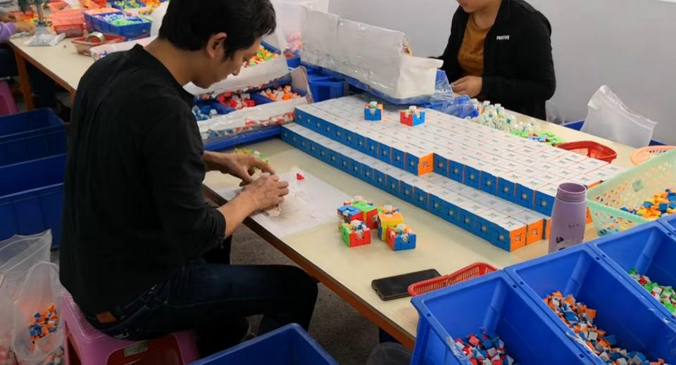

Módulo 05 — Procesos y Jobs
¿Qué es un proceso?

Un proceso es un programa en ejecución. Cada uno tiene:
- PID (Process ID): número único
- PPID (Parent PID): padre que lo lanzó
- UID/GID: usuario y grupo que lo corre
- Estado: running, sleeping, stopped, zombie
- Memoria, descriptores de archivo, variables de entorno
Linux es multitarea preemptivo: el kernel decide qué proceso corre en cada CPU.
Ver procesos — ps
ps # procesos del usuario en la terminal actual
ps aux # TODOS los procesos del sistema (BSD-style)
ps -ef # TODOS los procesos (UNIX-style)
ps aux | grep python # filtrar
ps -u ana # solo de ana
ps --forest # árbol
ps -o pid,user,pcpu,pmem,cmd # columnas customColumnas de ps aux
| Columna | Significado |
|---|---|
USER | Usuario dueño |
PID | Process ID |
%CPU | % de CPU |
%MEM | % de RAM |
VSZ | Memoria virtual (KB) |
RSS | Memoria física residente (KB) |
STAT | Estado (R/S/D/Z/T) |
START | Hora de inicio |
TIME | Tiempo CPU acumulado |
COMMAND | Comando |
Estados (STAT)
| Letra | Significado |
|---|---|
R | Running |
S | Sleeping (interrumpible) |
D | Sleeping (no interrumpible — I/O) |
Z | Zombie (terminó pero el padre no lo recogió) |
T | Stopped |
+ | En foreground |
s | Líder de sesión |
< | Alta prioridad |
N | Baja prioridad |
Monitor en tiempo real — top / htop
top # built-in
htop # versión moderna (instalable)
btop # más bonito aúnAtajos en top
| Tecla | Acción |
|---|---|
M | Ordenar por memoria |
P | Ordenar por CPU |
T | Ordenar por tiempo |
k | Kill (pide PID) |
r | Renice |
1 | Mostrar todos los CPUs |
q | Salir |
Árbol de procesos — pstree
pstree # todos
pstree -p # con PIDs
pstree ana # de un usuario
pstree -s 1234 # ancestros del PID 1234Kill — terminar procesos
kill 1234 # SIGTERM (educado, default)
kill -9 1234 # SIGKILL (brutal)
kill -15 1234 # SIGTERM explícito
kill -l # listar todas las señales
killall firefox # por nombre
pkill -f "python script.py" # por línea de comando
pgrep firefox # encontrar PIDs por nombre
pgrep -u ana pythonSeñales importantes
| Señal | Número | Para qué |
|---|---|---|
SIGTERM | 15 | Pedir terminar (atrapable) |
SIGKILL | 9 | Matar inmediato (no atrapable) |
SIGINT | 2 | Ctrl+C |
SIGSTOP | 19 | Pausar (no atrapable) |
SIGCONT | 18 | Continuar pausado |
SIGHUP | 1 | Hangup (releer config) |
SIGUSR1 / SIGUSR2 | 10/12 | Definidas por el programa |
Regla: probá
SIGTERM primero. SIGKILL solo si no responde — no permite cleanup, puede dejar archivos corruptos.Foreground y background
comando # foreground (bloquea terminal)
comando & # background
Ctrl+Z # suspender el proceso de foreground
bg # mandar a background
fg # traer a foreground
fg %1 # traer job #1
jobs # listar jobs de la shell
disown %1 # liberar de la shell (sigue corriendo si cerrás)Ejecutar y olvidar — nohup y &
nohup comando & # sigue después de cerrar la terminal
nohup comando > out.log 2>&1 &screen y tmux — multiplexores
Permiten sesiones persistentes que sobreviven a desconexiones SSH:
tmux # nueva sesión
tmux new -s trabajo # sesión nombrada
tmux attach # reconectar
tmux ls # listar sesiones
# Atajos dentro de tmux (prefix Ctrl+B)
Ctrl+B c # nueva ventana
Ctrl+B " # split horizontal
Ctrl+B % # split vertical
Ctrl+B d # detachPrioridad — nice y renice
Valor de niceness: -20 (alta prioridad) a +19 (baja). Usuarios normales solo pueden subir el valor (bajar prioridad).
nice -n 10 comando # arrancar con nice 10
renice 5 -p 1234 # cambiar a ya corriendo
sudo renice -5 -p 1234 # mayor prioridad (requiere root)time — medir tiempo
time comando
# real 0m2.345s (tiempo total transcurrido)
# user 0m1.890s (tiempo CPU en user space)
# sys 0m0.234s (tiempo CPU en kernel space)Variables de entorno
env # listar todas
echo $PATH
export MI_VAR="valor" # exportar (visible a hijos)
unset MI_VAR
printenv HOME/etc/environment, ~/.bashrc, ~/.profile — donde se setean.
Información del sistema
uname -a # kernel y arquitectura
hostname
uptime # carga del sistema
free -h # memoria
vmstat 1 5 # virtual memory cada 1s, 5 veces
iostat -x 1 # I/O (paquete sysstat)
mpstat -P ALL 1 # CPU por core
sar # histórico (sysstat)Archivos abiertos — lsof
sudo lsof # TODOS los archivos abiertos
sudo lsof -u ana # de un usuario
sudo lsof -p 1234 # de un PID
sudo lsof -i # conexiones de red
sudo lsof -i :8080 # qué proceso usa el puerto 8080
sudo lsof archivo # quién tiene este archivo abiertoStrace y ltrace — debugging
strace comando # syscalls
strace -p 1234 # adjuntar a proceso
strace -e openat ls # solo syscalls específicas
ltrace comando # llamadas a libreríasEjercicios
- Encontrar los 5 procesos que más memoria consumen
- Lanzar
sleep 1000en background, suspender con Ctrl+Z, mandarlo a bg, listarlo conjobs - Encontrar qué proceso tiene abierto el puerto 22
- Usar
stracepara ver qué archivos abrelsal arrancar - Crear una sesión
tmux, lanzar un proceso, hacer detach, cerrar terminal, reconectar y verificar